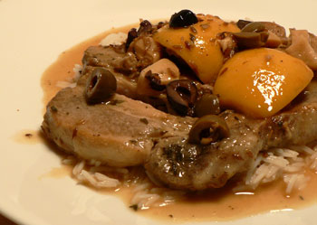

Spoon Pork
Thrilled with the success of my first try at Pork Chops Rebecca last week, and generally addicted to pork these days, I decided to give the recipe another try with a few variations. I ended up with Spoon Pork Leland.

When I emailed mom about which chops I should buy, she replied to me with one of her famous one-sentence emails: “I use the cheapest.” So, I ordered two rib chops from FreshDirect, at a total cost of $3.43.
I used essentially the same technique, but I used duck fat instead of olive oil, vermouth instead of chicken broth, and I added chopped Greek olives toward the end of the cooking. The result was the best pork chops I’ve ever made, and the first meal that I’ve described as “delicious” in over a week.
Spoon Pork (a boy’s tribute to his mother’s pork chops)
- 3 tablespoons rendered duck fat
- 2 pork rib chops
- Salt and pepper
- 2 tablespoons cumin seeds
- 1 lemon, quartered, visible seeds removed
- 3 garlic cloves, chopped coarsely
- 1/2 cup dry vermouth or white wine
- 6 marinated olives, Greek or otherwise, pitted and chopped coarsely.
- Heat the duck fat over medium heat in a sauté pan for which you have a cover.
- Season the pork chops all over with the salt, pepper, and cumin.
- Sear the chops in the duck fat. Do not shake the pan or move the chops until you’re sure you’ve browned the meat. Flip the chops and repeat.
- Squeeze the lemon quarters into the pan then drop them in. Add the garlic.
- Pour in the vermouth and bring to a simmer. Turn the heat to low, cover, and cook for 1.5 hours. Add the olives, and cook for thirty minutes more.
- As it cooks, make some long-grain or basmati rice, 1/2 cup per person. Serve the meat, olives, lemons, and sauce over the rice.
(Note: I made this last night and reheated it tonight. The meat became so tender that it fell off the bone as I attempted to turn it in the pan.)
Thanks, mom!
Comments
In retrospect, what do you think about the duck fat in this dish? My immediate reaction upon reading your post was that the duck fat was wasted, since with all those other strong flavors it would pretty much get lost. Furthermore I thought it might make the whole thing almost too rich (if that’s possible!).
Personally, I would save the duck fat and use it to roast potatoes in.
Otherwise, it sounds great—I love the addition of the olives; capers would be good, too.
Having eaten it just a few nights ago, prepared in almost exactly the same way, I could definitely taste the duck fat. Never fear—I have duck fat left over with which to roast potatoes.
Capers would have been good, you’re right.
Add a comment